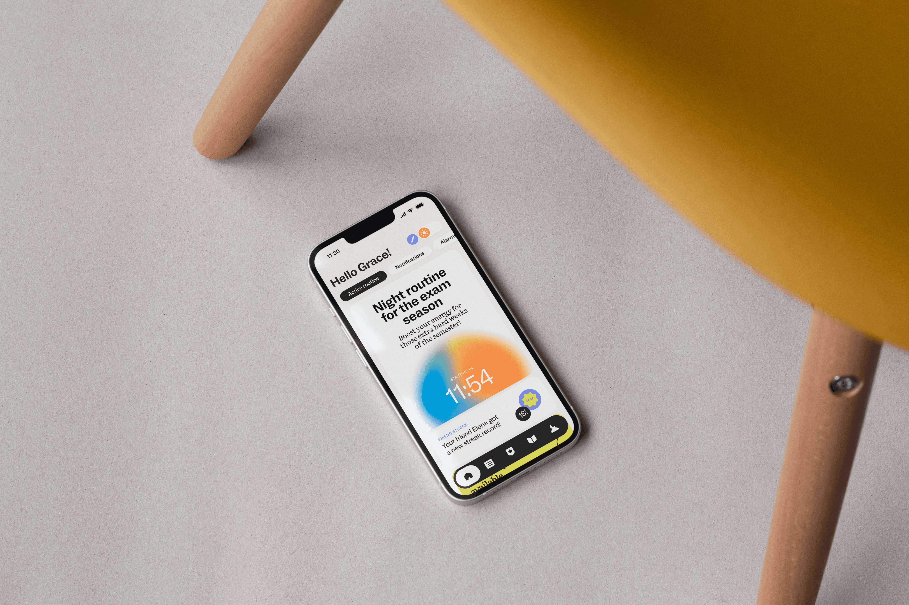

Dormi,
rise into yourself.
An app that helps university students improve their sleep through routines, small daily questions, friendly challenges, and learning that feels alive.

UX design · Interface design
Brand design
Motion direction
Visual identity
Selected case study
Students are awake when they need to be resting.
University life rewards late nights, but the cost shows up in focus, energy, and wellbeing.
Dormi frames sleep as an active, positive habit—not a punishment or a productivity metric. It helps people understand their patterns and build routines that fit real student life.
Routines over reminders
Users create, customize, save, and share routines that make the hour before bed feel intentional.
Three questions
A short daily check-in gives Dormi enough signal to adjust advice without turning sleep into admin.
Better together
Optional challenges and shared progress give the social layer a gentle, motivating role.
Calm, but with the energy of a sunrise.
Soft spherical gradients, expressive type, and playful motion balance rest with the optimism of a new day. The system gives students a place that feels both reassuring and distinctly theirs.